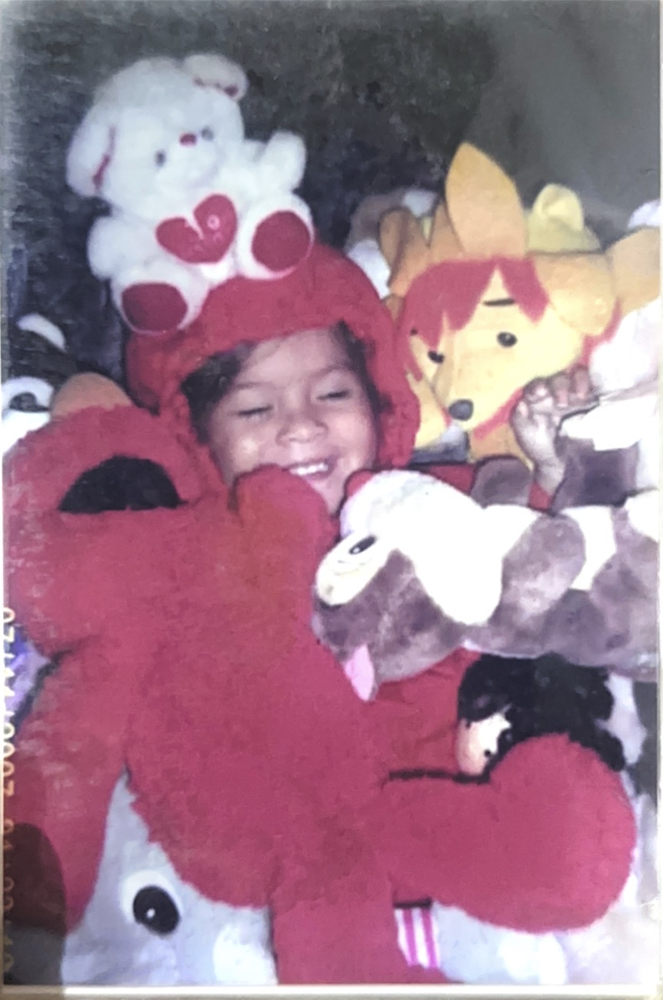

The Girl You Were
She remembers everything.
A younger version of you is lying on the couch, surrounded by all her favorite plushies. She looks so happy, without a single worry in the world. “I used to feel loved by everyone around me. I felt happy just being myself,” she says. “When did we start questioning if we were good enough to be loved or if we even deserved to be happy?” You look at her and realize how much you’ve changed. You wish you could see yourself the way she once did.